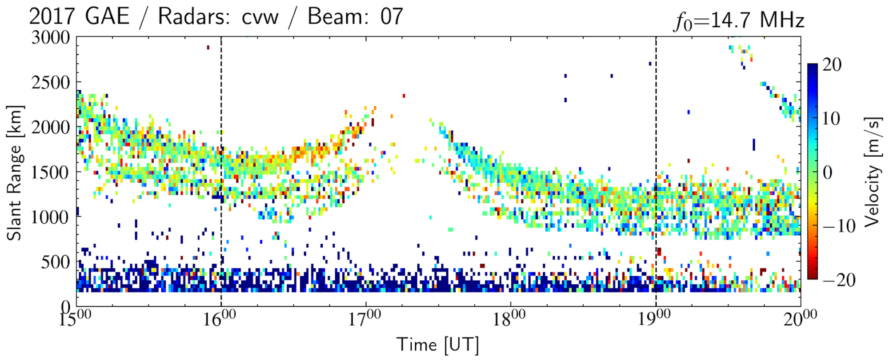
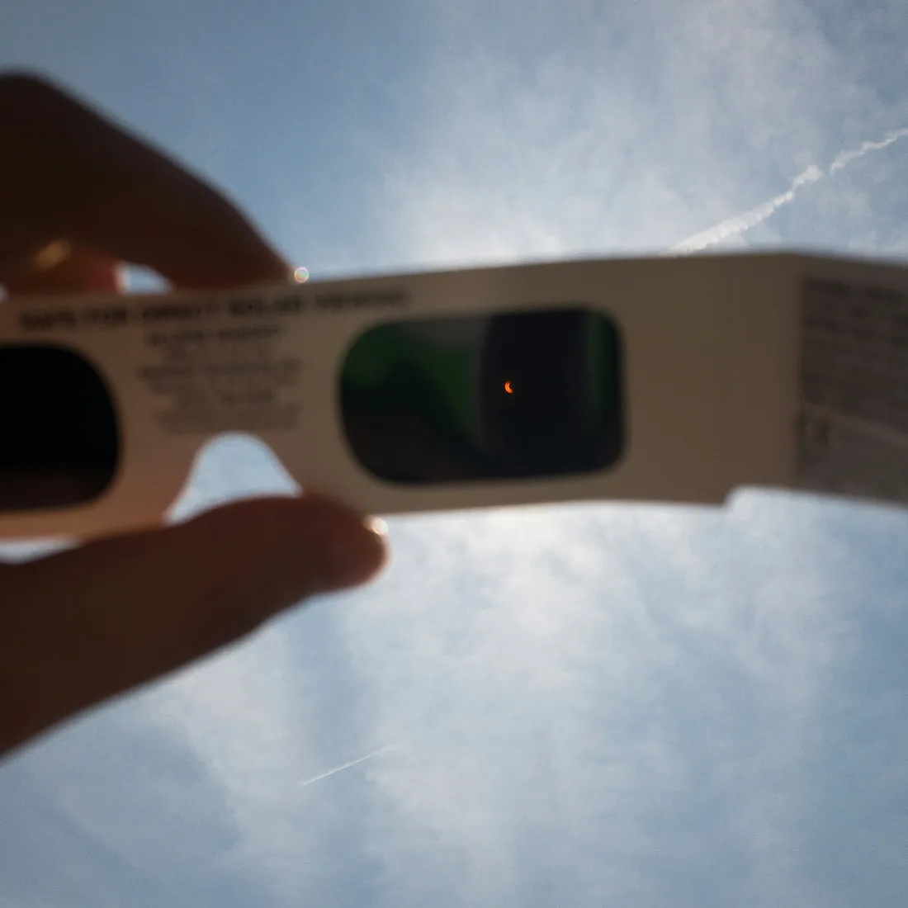

Solar Eclipse Ionospheric Physics
Investigating ionospheric density response to American solar eclipses using SuperDARN, HamSCI, and WACCM-X
Overview
The solar eclipse in April 2024 presents a unique opportunity for ionospheric scientific exploration. As the moon's shadow sweeps across the contiguous United States, it provides a natural laboratory to study the ionosphere — a partially ionized region of our atmosphere that plays a crucial role in radio communication, navigation, and space weather. During a solar eclipse, the reduction in solar radiation leads to a decrease in ionization. This decrease in ionization causes changes in the density of ionospheric plasma. We seek to unravel the intricate interactions between solar energy, Earth's atmosphere, and space, by closely studying the response of plasma to this eclipse and comparing it to the recent eclipses that occurred over the same geographic area.

Fig 1. A map showing the paths of CONUS eclipses, where the red lines denote the 90% occultation for October 2023 and the path of totality for the other two. Orange lines denote the 50% occultation regions. Blue dots denote the locations of ionosondes. Region enclosed by the blue contours are the fields-of-view (FoV) of SuperDARN HF radars.

Fig 2. Line-of-sight (LoS) velocity observations from beam 07 of Christmas Valley West (CVW) SuperDARN HF radar during eclipse on August 2017, showing eclipse effects on HF observations. Velocity is color coded by color bar on right. The vertical dashed lines represent start and end of eclipse.
Science Questions
Our project aims to study the ionospheric response during solar eclipses, focusing on the April 2024 eclipse in the contiguous United States. Our overarching goal is to understand and quantify the relative importance of external forces on the ionospheric density responses to the October 2023 and April 2024 solar eclipses as observed by HF sounding and compare the findings with the August 2017 solar eclipse. We will address the following science questions:
- What is the relative importance of the abated EUV flux, thermospheric winds, and photoelectron transport and heating on the spatiotemporal variation of the F-region height HmF2?
- What parameters control the formation, magnitude, and duration of the ionospheric G-condition (NmF1 ≥ NmF2)? How does the G-condition change with latitude, longitude, local time, and orientation of the magnetic field lines?
- How do the changing HmF2, HmF1, NmF2, NmF1, and the G-condition impact HF propagation through the bottom-side electron density and how does that change with transmit frequency?
Observational Campaign
We leverage NSF-supported ground-based HF facilities, such as SuperDARN and HamSCI, to collect real-world observations during the 2024 solar eclipse. These facilities provide precise measurements of ionospheric parameters such as electron density, F-region height, etc. We also use state-of-the-art numerical models to simulate ionospheric behavior during eclipses. We refine our understanding of ionospheric responses by using the model simulations in interpreting the observations.

Fig 3. Multi-instrument campaign during the April 2024 eclipse combining SuperDARN, HamSCI citizen science, and ionosondes. The figure shows the coordinated observation plan across the continental USA.
Broader Impacts
Our findings will enhance our understanding of ionospheric dynamics during solar eclipses, which will lead to our fundamental understanding of the underlying complex interaction between dynamics, chemistry, and energetics in the Earth's upper atmosphere. Our project will contribute to space weather research by helping improve physics-based models that are used for predicting ionospheric disruptions, benefiting satellite communication, GPS, and radio propagation. Emergency services and aviation will benefit from more reliable HF communication. This study includes a significant general audience involvement, by incorporating HamSCI — a citizen science community led by the University of Scranton and supported by the NSF AGS — to study HF propagation conditions during eclipses.